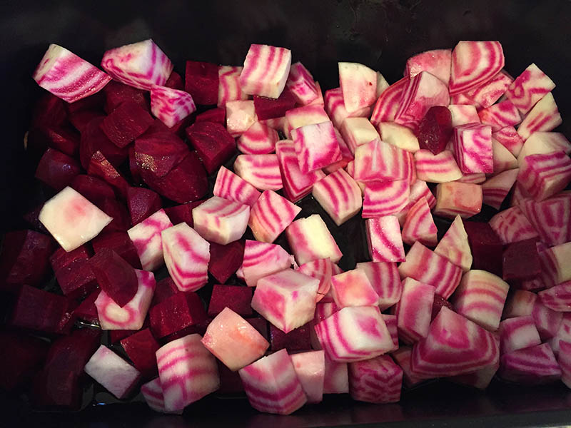

Beet and Quinoa Salad with Halloumi

This healthy vegetarian recipe combines brightly coloured beets, quinoa and halloumi.
Ingredients
- 4 large beetroot
- A red onion
- cup quinoa and pepper
- Olive oil
- 100g kale
- a block of halloumi cheese
- vegetable stock cube.
Before you get started, set your oven to preheat to 200C.
Steps
Step 1
eel and chop the beetroot into 2cm dice. Chop the onion into 8 wedges and separate. Place into a baking tray. Shred the kale and keep aside.
-
Step 2
Add a spoonful of olive oil and some salt and pepper to the baking tray and mix well. Put the tray in the heated oven and roast for 35 minutes. Turn the veg halfway through.
-
Step 3
While the veg is roasting rinse the quinoa, put it in a pan with a lid. Make up the stock cube with 400ml boiling water and pour this over the quinoa. Put the lid on the pan and bring it back to the boil. Cook for 15 minutes until the water is absorbed. Turn off the heat and leave the pan with the lid on.
-
Step 4
After the veg has roasted for 35 minutes take the tray from the oven, mix in the kale and put it back in for 10 minutes.
-
Step 5
Slice the halloumi into slices. Heat a frying pan and lightly spray with oil. Once hot fry the halloumi until brown on each side.
-
Step 6
Take the tray from the oven. Tipe the quinoa in and mix everything together. Then serve in bowls with slices of halloumi on top.